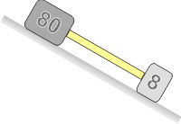
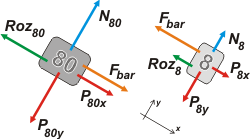

NO ME SALEN
PROBLEMAS RESUELTOS DE FÍSICA DEL CBC
Rozamiento
|
|

|
| |
46 - Dos bloques, que pesan 8 kgf y 80 kgf respectivamente,
están unidos por una barra de
masa despreciable y deslizan hacia abajo sobre
un plano inclinado 30º respecto de la horizontal.
El coeficiente de rozamiento dinámico entre el
bloque de menos masa y el plano es 0,25 y el
correspondiente al otro bloque es 0,5.
a) i) Calcular la aceleración y la tensión en la
barra.
ii) ¿La barra está comprimida o traccionada?
¿Depende el resultado de la ubicación relativa de
los bloques?
b) i) ¿Cuál sería la aceleración y la tensión en
la barra si los bloques intercambiaran los coeficientes
de rozamiento?
ii) ¿A qué tipo de fuerza estaría sometida la
barra en este caso?
c) Si el coeficiente de rozamiento entre cada
bloque y el plano es el mismo, calcular la aceleración
y la tensión en la barra. ¿Dependen estos
resultados de la ubicación relativa de los bloques?
d) Habiendo analizado todos los casos, ¿de
qué depende que la barra esté comprimida o
traccionada? Indicar que sucedería en cada caso,
si la barra fuera reemplazada por una soga. |
|
A ver, a ver... yo te voy a cambiar la pregunta con el propósito de que te caiga la ficha... Cuando un paracaidista está cayendo ya con el paracaídas abierto... ¿quién va abajo? ¿El chabón o el paracaídas? Otra pregunta... las sogas del paracaídas, ¿están tensas o todas arrugadas?
¿Te cierra mejor ahora? El ejercicio este relata el mismo fenómeno... puro rozamiento no importa si es con el aire o con el plano inclinado... es lo mismo. Bueno, ahora sí, vamos a las barras. |
|
|
|  |
Ahí tenés la foto de lo que está sucediendo: los dos bloques unidos por una barra y bajando por el pano inclinado. ¿Quién va arriba, quién va abajo? ¿La barra está comprimida o traccionada? Todo eso intentaremos responderlo analíticamente (más allá que ya lo hayas resuelto intuitivamente). Pero para eso... ya lo sabés, tenemos que empezar con los diagramas de cuerpo líbre. |
|
|
|
| Le puse nombre a los bloques: 8 y 80. ¿OK? |
|
|
|  |
Supongamos que el conjunto baja como me indica mi intuición y que la barra está estirada. Entonces los sentidos de las fuerzas que hace la barra, Fbar , son los que dibujé en los DCLs.
Pero si me equivocase no habría problema, el resultado analítico lo indicaría claramente con un signo. |
|
|
|
Vamos a las ecuaciones de Newton:
Fbar + P80x − Roz80 = m80 . a
N80 − P80y = 0
P8x − Roz8 − Fbar = m8 . a
N8 − P8y = 0
Roz80 = µd80 N80
Roz8 = µd8 N8
Haciendo las primeras cuentas encontramos que las fuerzas de rozamiento valen:
Roz80 = 346 N
Roz8 = 17 N
Y esa es la clave del asunto; el cuerpo que está más retenido por el plano es el que viaja arriba, lo mismo que el paracaídas y el paracaidista. No importa tanto la masa de los cuerpos sino cuánto los retiene el medio.
Pensémoslo de otra manera: suponete que se largan en posición paralela, ambos al mismo nivel, y la fuerza de la barra es nula. El cuerpo menos retenido bajará más rápido y se colocará abajo, el otro, más retenido baja más lento y queda arriba. Recién cuando la barra queda alineada empiezan a bajar con la misma velocidad (y aceleración). Calculésmosla sumando miembro a miembro la primera con la tercera:
P80x + P8x − Roz80 − Roz8 = ( m80 + m8 ) a
|
|
Px = P sen 30º
Py = P cos 30º |
|
| |
|
|
Con ese dato podemos calcular la fuerza que hace la barra.
Fbar + P80x − Roz80 = m80 . a
|
|
|
| |
|
|
Si se invierte el coeficiente de rozamiento sigue siendo mayor en el bloque más pesado, cambia la aceleración, pero no la lógica general del problema.
Si colocamos a los bloques en la posición invertida, sólo por un instante se mantendrán en esa posición. Se trata de un equilibrio inestable, y la menor perturbación hará que se desalinien y el bloque menos retenido volverá a ganar velocidad y aventajar al otro (lo pasa por el costado, porque la barra no permite que se aproximen) hasta quedar nuevamente el la posición el más retenido arriba. La barra siempre va a funcionar traccionada, nunca comprimida. Y si de sogas se tratase, siempre van a bajar tensas, nunca arrugadas.
(Por eso es que si un viento fuerte sacude a paracaidista y los pone patas p'arriba, basta con unos rezos para que vuerla a la buena vertical con el paraguas arriba y llegar al piso sano y salvo).
Dicho todo esto, el resto de los ítemes del ejercicio son pan comido y puro cálculo. |
|
|
|
|
|
| DISCUSION: |
|
 |
| DESAFIO: |
|
| Algunos derechos reservados por mí.
Se permite a tú su reproducción de ésto citando la fuente, o sea a yo. Última actualización mar-16. Buenos Aires, Argentina. |
|
|
|